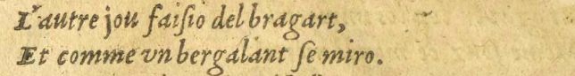
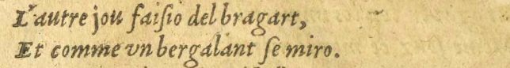
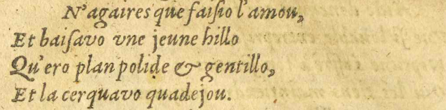
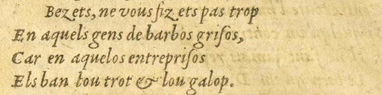
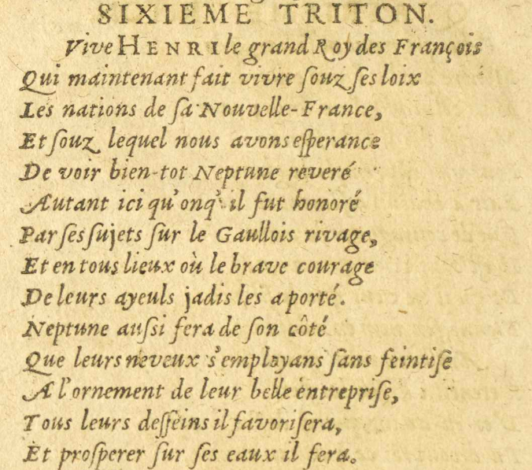
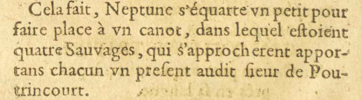
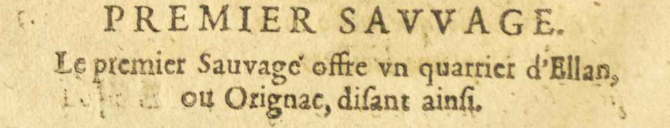

6/11
- L'autre jou faiſsio del bragart,
- Et comme vnun bergalant ſse miro.
 
- N'agaires que faiſsio l'amou,
- Et baiſsavo vneune jeune hillo
- Qu'ero plan polide & gentillo,
- Et la cerquavo quadejou.
- Bezets, ne vous fizets pas trop
- En aquels gens de barbos griſsos,
- Car en aquelesE09 : aquelos entrepriſsos
- Els ban lou trot & lou galop.
SIXIEME TRITON.
- Vive HENRI
 Henri IV, roi de France de 1589 à 1610. le grand Roy des François
Henri IV, roi de France de 1589 à 1610. le grand Roy des François - Qui maintenant fait vivre ſsouz ſses loix
- Les nations de ſsa Nouvelle-France,
- Et ſsouz lequel nous avons eſsperance
- De voir bien-tot Neptune
 Dieu d'origine latine des eaux vives et des sources, puis des mers. reveré
Dieu d'origine latine des eaux vives et des sources, puis des mers. reveré - Autant ici qu'oncq#3E09 : onq#3'il fut honoré
- Par ſses ſsujets ſsur le Gaullois rivage
 Côtes atlantiques de la France.,
Côtes atlantiques de la France., - Et en tous lieux où le brave courage
- De leurs ayeuls jadis les a porté.
- NeptuneDieu d'origine latine des eaux vives et des sources, puis des mers. anſssi fera de ſson côté
- Que leurs neveux s'employans ſsans feintiſse
- A l'ornement de leur belle entrepriſse,E11 E18 :
- Tous leurs deſsſseins il favoriſsera,
- Et proſsperer ſsur ſses eaux il fera.

Cela fait, NeptuneDieu d'origine latine des eaux vives et des sources, puis des mers. s'équarte vnun petit pour
faire place à vnun canot, dans lequel eſstoient
quatre Sauvages Désignation de ceux habitant dans la nature, c'est-à-dire loin de la civilisation., qui s'approcherent appor-
Désignation de ceux habitant dans la nature, c'est-à-dire loin de la civilisation., qui s'approcherent appor-
tans chacun vnun preſsent audit ſsieur de Pou-
trincourt Fondateur de la colonie de Port-Royal en Nouvelle-France..
Fondateur de la colonie de Port-Royal en Nouvelle-France..
PREMIER SAVVAGESAUVAGE.

Le premier Sauvage offre vnun quarrierquartier d'EllanE09 : ,
ou Orignac, diſsant ainſsi.